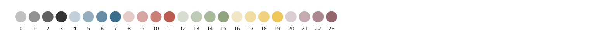
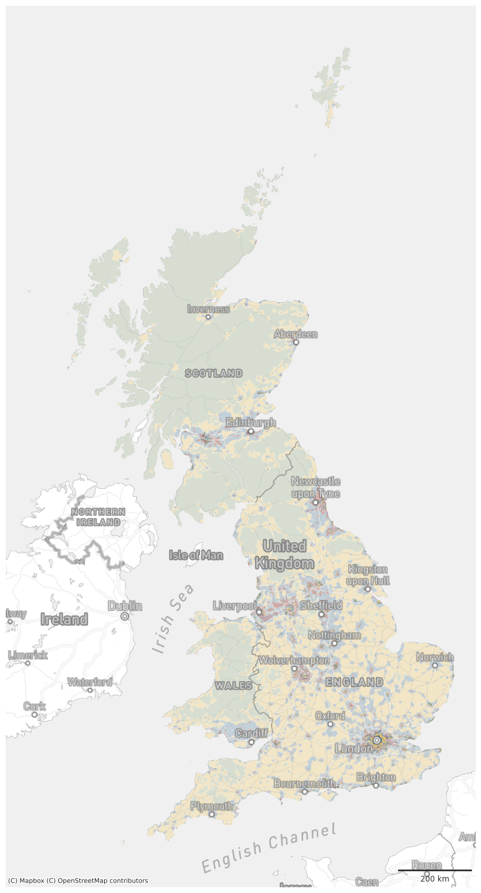
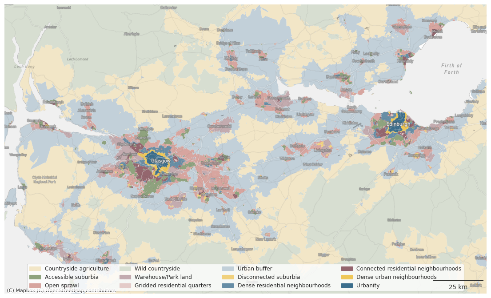

Plot signatures for chips (12 classses)¶
This notebook generates some static plots of spatial signatures. We have a series of custom MapBox basemaps that need an API token. You will need to create and pass your own token to reproduce the figures.
Spatial Signatures¶
import geopandas as gpd
from shapely.geometry import Point
import urbangrammar_graphics as ugg
import seaborn as sns
import matplotlib.pyplot as plt
from matplotlib_scalebar.scalebar import ScaleBar
from matplotlib.lines import Line2D
import contextily
sns.set(context="paper", style="ticks", rc={'patch.force_edgecolor': False})
spsig = gpd.read_parquet("../../urbangrammar_samba/spatial_signatures/signatures/signatures_combined_levels_simplified.pq")
spsig.signature_type.unique()
array(['0_0', '1_0', '3_0', '4_0', '5_0', '6_0', '7_0', '8_0', '2_0',
'2_1', '2_2', '9_0', '9_1', '9_2', '9_3', '9_4', '9_5', '9_6',
'9_7', '9_8'], dtype=object)
cmap = ugg.get_colormap(spsig.signature_type.nunique(), randomize=False)
spsig.signature_type.nunique()
20
cols = cmap.colors
fig, ax = plt.subplots(figsize=(20, 5))
for i, c in enumerate(cols):
ax.add_artist(plt.Circle((i, 0), 0.4, color=c))
plt.text(i, -1, i, horizontalalignment='center')
ax.set_axis_off()
ax.set_aspect(1)
ax.autoscale()
plt.xlim(-1.25,43.25)
plt.ylim(-1,1)

symbology = {'0_0': cols[16],
'1_0': cols[15],
'3_0': cols[9],
'4_0': cols[12],
'5_0': cols[21],
'6_0': cols[8],
'7_0': cols[4],
'8_0': cols[18],
'2_0': cols[6],
'2_1': cols[23],
'2_2': cols[19],
'9_0': cols[7],
'9_1': cols[7],
'9_2': cols[7],
'9_3': cols[0], # outlier
'9_4': cols[7],
'9_5': cols[7],
'9_6': cols[0], # outlier
'9_7': cols[0], # outlier
'9_8': cols[0], # outlier
}
types = {
"0_0": "Countryside agriculture",
"1_0": "Accessible suburbia",
"3_0": "Open sprawl",
"4_0": "Wild countryside",
"5_0": "Warehouse/Park land",
"6_0": "Gridded residential quarters",
"7_0": "Urban buffer",
"8_0": "Disconnected suburbia",
"2_0": "Dense residential neighbourhoods",
"2_1": "Connected residential neighbourhoods",
"2_2": "Dense urban neighbourhoods",
"9_0": "Urbanity",
}
fig, ax = plt.subplots()
for i, c in enumerate(types.keys()):
ax.add_artist(plt.Circle((0, i), 0.4, color=symbology[c], label=types[c]))
# plt.text(1, i, types[c], verticalalignment="center")
ax.set_axis_off()
ax.set_aspect(1)
ax.autoscale()
plt.xlim(-1.25,1)
plt.ylim(-1,20.25)
ax.legend()
<matplotlib.legend.Legend at 0x7f26b4a4d050>
token = "pk.eyJ1IjoibWFydGluZmxlaXMiLCJhIjoiY2t3Zzlkb3p4MGtrYzJvbnZqOGpjZjZtNSJ9.ANK4NEb_I45ucD_BHZt-Mg"
spsig = spsig.to_crs(3857)
df = spsig
ax = df.plot(color=df['signature_type'].map(symbology), figsize=(20, 20), zorder=1, linewidth=0, edgecolor='w', alpha=1)
contextily.add_basemap(ax, crs=df.crs, source=ugg.get_tiles('roads', token), zorder=2, alpha=.3)
contextily.add_basemap(ax, crs=df.crs, source=ugg.get_tiles('labels', token), zorder=3, alpha=1)
contextily.add_basemap(ax, crs=df.crs, source=ugg.get_tiles('background', token), zorder=-1, alpha=1)
ax.set_axis_off()
scalebar = ScaleBar(dx=1,
color=ugg.COLORS[0],
location='lower right',
height_fraction=0.002,
pad=.5,
frameon=False,
)
ax.add_artist(scalebar)
# ugg.north_arrow(plt.gcf(), ax, 0, size=.05, linewidth=1, color=ugg.COLORS[0], loc="upper left", pad=.002, alpha=.9)
# custom_points = [Line2D([0], [0], marker="o", linestyle="none", markersize=10, color=color) for color in symbology.values()]
# leg_points = ax.legend(custom_points, symbology.keys(), bbox_to_anchor=(1.05, 1), loc='upper left', frameon=True)
# ax.add_artist(leg_points)
plt.savefig("figs/signatures_gb_12_classes.png", dpi=300, bbox_inches="tight")

belt = gpd.GeoSeries([Point(-3.8718635546837663, 55.89080727223461)], crs=4326).to_crs(3857).buffer(120000).total_bounds
ax = df.plot(color=df['signature_type'].map(symbology), figsize=(14, 14), zorder=1, linewidth=0, edgecolor='w', alpha=1)
ax.set_xlim(belt[0], belt[2])
ax.set_ylim(belt[1] + (belt[3] - belt[1]) / 5, belt[3] - (belt[3] - belt[1]) / 5)
contextily.add_basemap(ax, crs=df.crs, source=ugg.get_tiles('roads', token), zorder=2, alpha=.3)
contextily.add_basemap(ax, crs=df.crs, source=ugg.get_tiles('labels', token), zorder=3, alpha=1)
contextily.add_basemap(ax, crs=df.crs, source=ugg.get_tiles('background', token), zorder=-1, alpha=1)
ax.set_axis_off()
scalebar = ScaleBar(dx=1,
color=ugg.COLORS[0],
location='lower right',
height_fraction=0.002,
pad=.5,
frameon=False,
)
ax.add_artist(scalebar)
for i, c in enumerate(types.keys()):
ax.add_artist(plt.Circle((0, i), 0.4, color=symbology[c], label=types[c]))
ax.legend(loc='lower center', ncols=4)
plt.savefig("figs/signatures_scottish_belt_12_classes.png", dpi=300, bbox_inches="tight")

belt
array([-551013.87932843, 7416709.10995457, -311013.87932843,
7656709.10995457])